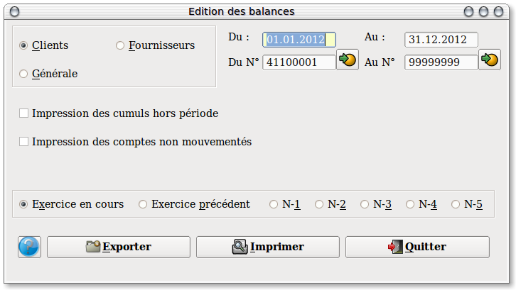
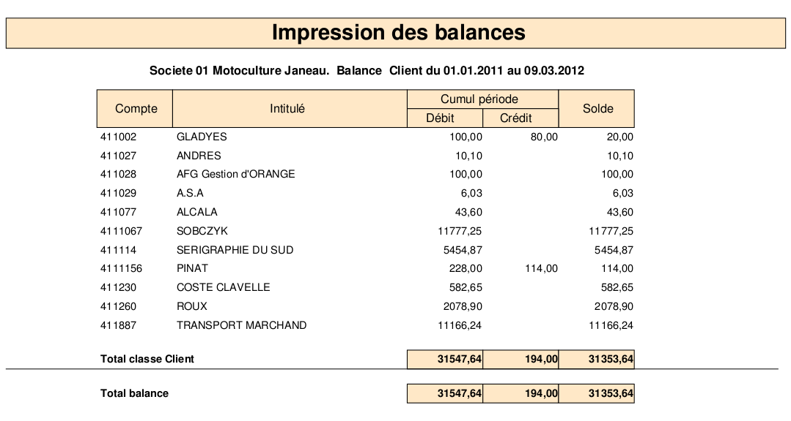

~ Comptabilité Laurux ~

~ Comptabilité Laurux ~ |
|
|
|

A gauche, un panel permet de sélectionner le type de balance a éditer. Il suffit de cliquer le bouton correspondant à votre choix. ( C'est la balance client qui est proposée par défaut)
Par défaut, les dates proposées sont celles du début et de fin de l'exercice en cours. Modifiez ces dates si besoin, sous la forme JJMMAAAA.
Par défaut, également, les comptes de début et de fin sont proposés selon le type de balance selectionnée.
Ex: de 410000 a 4199999 pour une balance "Client", de 100000 a 9999999 pour une balance "Bilan".
Enfin, vous pouvez choisir l'exercice a imprimer, (Pour rappel,Laurux conserve 5 exercices en archives) dans ce cas, comme pour l'exercice en cours, les dates de debut et de fin d'exercice s'affichent automatiquement, et bien entendu ces dates sont modifiables selon vos besoins..
Si vous souhaitez générer un fichier texte (Pour remettre à votre comptable par exemple)cliquez sur le bouton "Exporter". Cela va copier un fichier "Balances.txt" sous votre répértoire de travail Laurux.
Pour creer votre rapport d'impression, il suffit de cliquer sur le bouton "Imprimer" pour que le rapport ci-dessous soit généré et affiché à l'écran.

Pour imprimer votre rapport, cliquer sur "l'imprimante".
----------------------------------------------------------------------------------------------------------------------